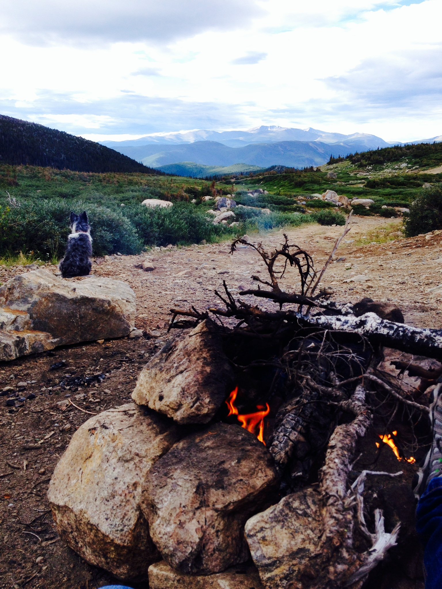
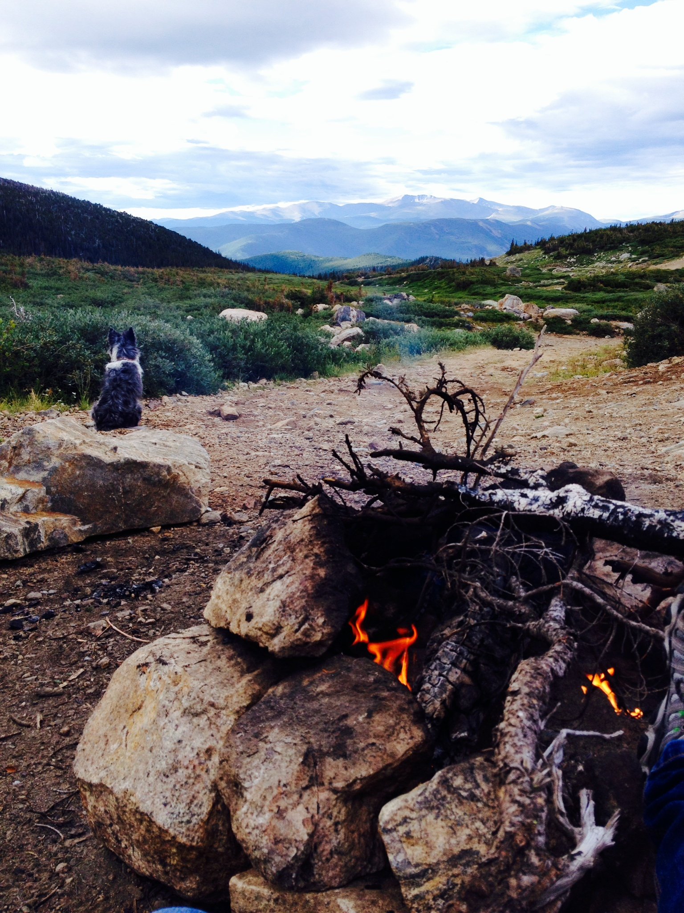
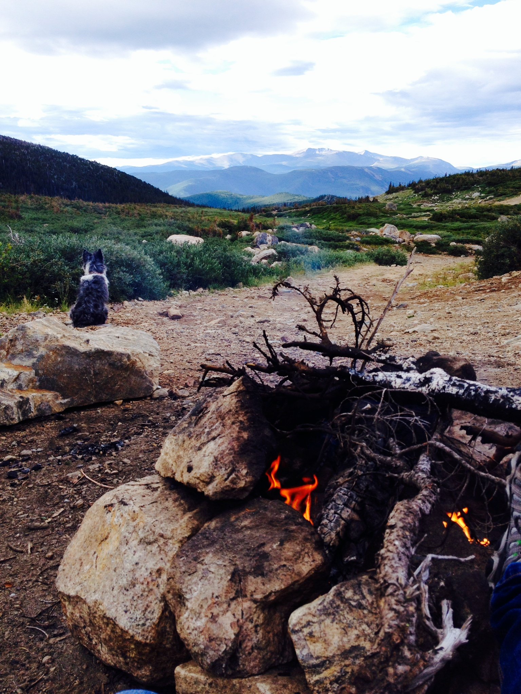

Im ready to take a huge step, to start my carrer as a web developer, and really learn more about HTML, CSS, JavaScript and more. I am also really looking foward to ending my career as a Waitress. After this program I intend to get a job as a web developer (hopefully) at a startup compnay. I love the passion of the people at startups because they belive in the product they are selling. You don't get that cog- in-the-wheel feeling. But yet I am still a child in this feild and might come to change my mind. I look foward to be challenged throughout this next 6 months and hope to learn more than just web development.
After I have mastered web development, I would like to look into creating viedogames for fun. I have always loved and been facinated by them.
